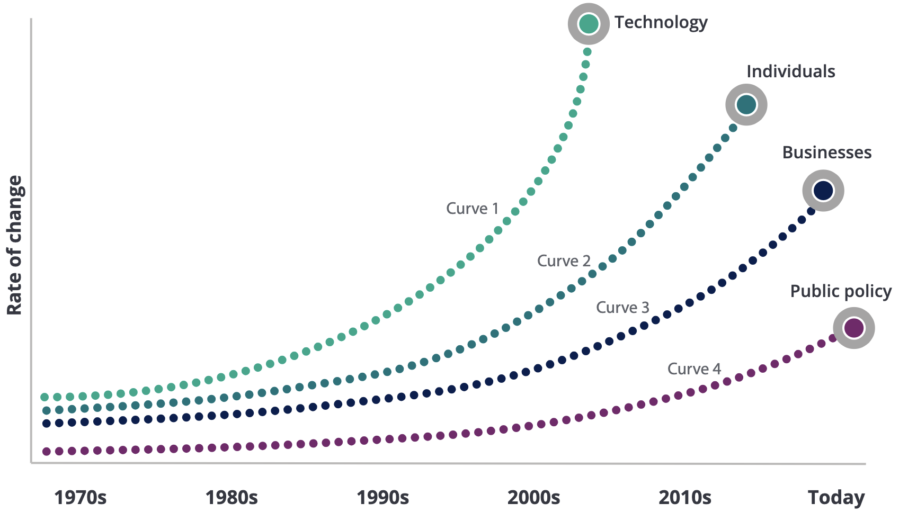

2 Change
2.1 The Nature of Change
In the landscape of business administration, the concept of “gradual change blindness,” as illustrated by the Changing Room Illusion, provides a poignant parallel to the often-overlooked progression of technological disruption. Fourth-year business administration students are entering a professional world where change is not always a thunderous arrival of new technology but often a silent march of iterative updates and integrations. Similar to how multiple changes in the illusion escape detection, the nuanced increments of technology can remain under the corporate radar until their cumulative effect is suddenly and disruptively apparent.
This is particularly relevant when contrasting linear and exponential growth. Linear growth is steady and consistent, much like adding a single brick each day to construct a wall. It is intuitive and predictable, aligning with the human tendency to expect more of the same at a manageable rate. Exponential growth, on the other hand, represents the kind of rapid acceleration that defines many technological advancements. It starts deceptively slowly, then rapidly expands, becoming overwhelming in its scope and impact. This type of growth is emblematic of digital advancements where initial slow developments can quickly lead to transformative change.

In their their report Trends (2017) elucidate the impact of digitalization on the workforce. They highlight that technological proficiency is now a foundational element of human capital trends, demanding a reevaluation of traditional organizational structures. For businesses to remain viable and competitive in this swiftly evolving digital epoch, recognizing the signs of incremental change and preparing for its eventual acceleration is imperative.
Business leaders will need to cultivate a keen sensitivity to the undercurrents of change. This means not only tracking disruptive trends but also building organizational resilience and adaptability. The ability to harness these subtle shifts, rather than be undermined by them, will determine the success of your strategic endeavors. Thus, embracing a mindset attuned to both immediate and horizon-level changes will be critical in navigating the complexities of tomorrow’s business challenges.
Envision allocating your savings into a long-term investment, specifically for a duration of 50 years. You are considering two potential options:
- An investment vehicle providing a steady 6% annual interest rate, with the interest paid out each period rather than being reinvested.
- An alternative option offering a 4% annual interest rate, with the additional feature of reinvesting the accrued interest, compounding at the same rate. It is important to note that both options are structured to discourage early termination of the investment due to unfavorable financial penalties before the term ends.
You are tasked with analyzing which option will result in exponential growth of your initial capital. Reflect upon the compounding nature of the second option compared to the linear growth of the first. Then, identify and explain your preferred investment choice, considering the potential long-term yield and your financial goals.
2.2 Habituation to Changes
Tali Sharot’s exploration into the human brain’s response to constant and gradual changes provides a fascinating parallel to the business world’s encounter with technological disruptions. Just as our senses habituate to repetitive stimuli, allowing us to become “blind” to gradual changes, businesses and professionals can become desensitized to the incremental advancements in technology. This “gradual change blindness” poses a significant challenge, as it can lead to complacency and a failure to recognize and adapt to the transformative potential of cumulative technological innovations.
Sharot introduces the concept of dishabituation as a mechanism to regain sensitivity to both the positive and negative aspects of our environment. In the context of managing change, encouraging dishabituation involves intentionally introducing variety and novelty to break the cycle of habituation. This can be as simple as altering routines or as complex as adopting new technologies or methodologies that challenge the status quo. By fostering an environment that continuously exposes individuals and organizations to new experiences, leaders can combat complacency and stimulate a culture of perpetual learning and adaptation.
Reflect on the managerial implications of Sharot’s talk, specifically focusing on the practical applications of fostering a culture of continuous learning, embracing variety in professional development, strategically inducing discomfort for growth, and the importance of regular reflection and adaptation within your team or organization.
Key Areas for Reflection:
Fostering a Culture of Continuous Learning: How can you encourage your team to embrace new skills, technologies, and methodologies? Consider the mechanisms you might employ to ensure that learning and development are not just encouraged but ingrained within the organizational culture.
Variety in Professional Development: Reflect on the current state of professional development within your organization. How diverse are the training programs available to your team? Brainstorm ways to introduce a broader range of topics and delivery methods to maintain high levels of engagement and curiosity.
Strategic Discomfort: Discuss the concept of strategic discomfort and its potential to drive innovation within a team or organization. Provide examples of how you could rotate roles or engage in cross-departmental projects to offer new perspectives and insights.
Regular Reflection and Adaptation: Emphasizing the importance of awareness in managing habituation, propose a structured approach for your team to engage in regular reflection and adaptation. How can you make this practice an integral part of your team’s routine to continuously identify areas for improvement and adapt to changes more effectively?
- Your reflection should not only analyze the current state of these practices within your organization but also propose concrete actions for improvement.
- Use specific examples from your own experiences or hypothetical scenarios to illustrate how these strategies could be implemented effectively.